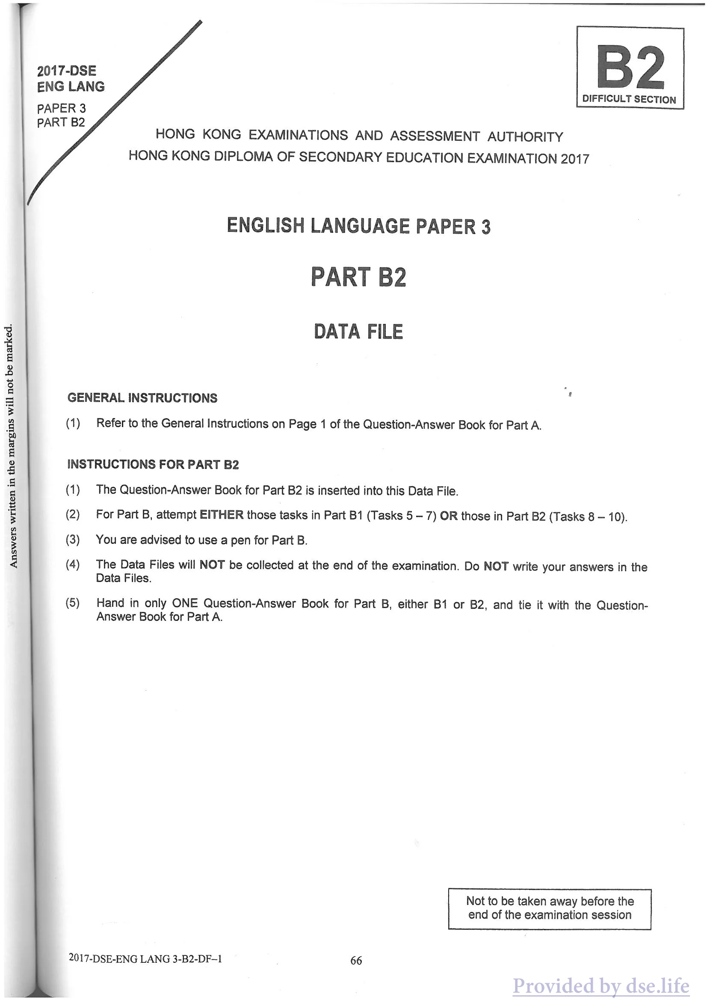

原生文字重建
2017-DSE
ENG LANG
PAPER 3
PART B2
ENG LANG
PAPER 3
PART B2
B2DIFFICULT SECTION
ENGLISH LANGUAGE PAPER 3
PART B2
DATA FILE
GENERAL INSTRUCTIONS
Refer to the General Instructions on Page 1 of the Question-Answer Book for Part A.
請參閱甲部問答冊第 1 頁的一般指示。
INSTRUCTIONS FOR PART B2
The Question-Answer Book for Part B2 is inserted into this Data File.
乙部二問答冊夾於本資料檔內。
For Part B, attempt EITHER those tasks in Part B1 (Tasks 5 – 7) OR those in Part B2 (Tasks 8 – 10).
乙部須選答乙部一（任務 5 至 7）或乙部二（任務 8 至 10），兩者選其一。
You are advised to use a pen for Part B.
建議乙部使用原子筆作答。
The Data Files will NOT be collected at the end of the examination. Do NOT write your answers in the Data Files.
考試結束時資料檔不會收回。請勿在資料檔內書寫答案。
Hand in only ONE Question-Answer Book for Part B, either B1 or B2, and tie it with the Question-Answer Book for Part A.
乙部只須交一份問答冊（乙部一或乙部二），並與甲部問答冊綁在一起。
2017-DSE-ENG LANG 3-B2-DF-1Not to be taken away before the end of the examination session
核對原卷影像
